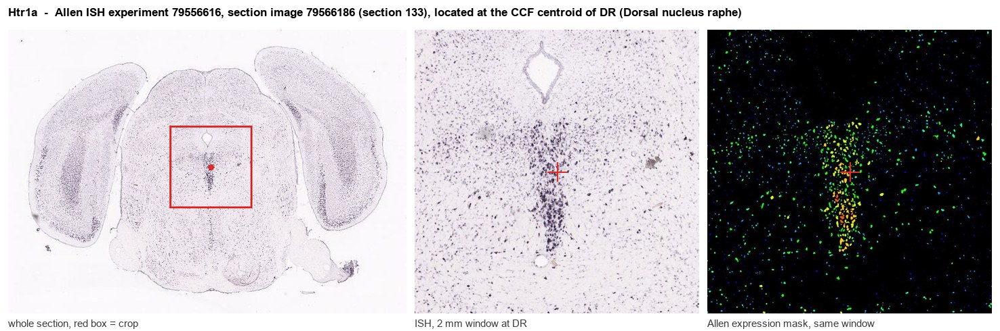
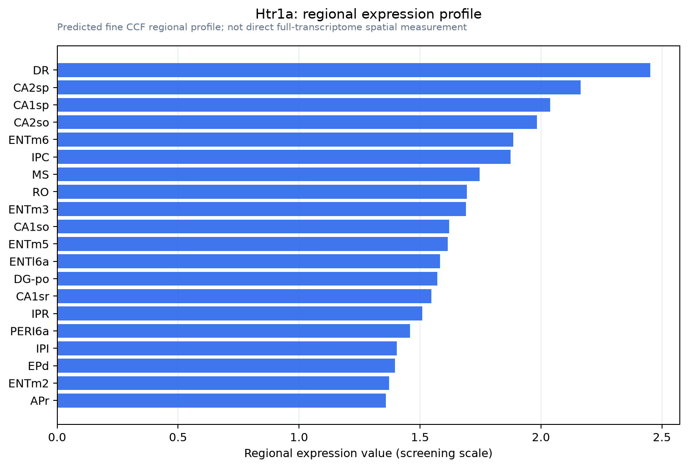

Htr1a
5-hydroxytryptamine receptor 1A (5-HT-1A) (5-HT1A) (Serotonin receptor 1A)
Spatial tier: REGION_BIASED · Class: GPCR · Top region: DR (Dorsal nucleus raphe) · Positive regions: 38/554
42.9Discovery Score
39.7Targetability Score
CEvidence grade C
What this means: Htr1a: fine CCF profile is region-biased toward DR (top regions: DR, CA2sp, CA1sp, CA2so, ENTm6); this is a discovery lead, not direct proof.
Function in DR: evidence, prediction, innovation
- Gene function
- HTR1A encodes the serotonin 1A receptor, a Gi/Go-coupled GPCR that inhibits adenylyl cyclase and opens GIRK potassium channels, hyperpolarising the cell. On raphe serotonergic neurons it is a somatodendritic autoreceptor giving negative feedback onto 5-HT firing; the same protein is a postsynaptic heteroreceptor in cortex and hippocampus. Autoreceptor density sets how fast serotonin rises during SSRI treatment.
- Region function
- The dorsal raphe supplies most forebrain serotonin and governs mood, anxiety, stress coping and behavioural flexibility.
- Published in this region
- direct Day et al. 2004 showed most DR serotonergic neurons express 5-HT1A mRNA. Richardson-Jones et al. 2010 built mice with selectively higher or lower raphe autoreceptor levels and showed autoreceptor level sets raphe firing rate, stress resilience and antidepressant responsiveness, with lowering it converting non-responders into responders. Bortolozzi et al. 2012 knocked autoreceptors down with a sertraline-conjugated siRNA and got strong antidepressant-like effects; Turcotte-Cardin et al. 2019 deleted Htr1a from adult 5-HT neurons and saw a paradoxical anxiogenic SSRI response; Nishitani et al. 2019 edited Htr1a in DR with AAV-CRISPR.
- Predicted function
- Prediction: Htr1a is the principal brake on DR serotonergic output, and its level rather than its presence is the behaviourally relevant variable. Acutely removing that brake in Pet1-positive DR neurons should accelerate SSRI-induced 5-HT elevation and antidepressant-like behaviour while causing transient anxiogenesis from unopposed 5-HT at amygdala heteroreceptors.
- Innovation
- ★☆☆☆☆ 1/5 The 5-HT1A autoreceptor in dorsal raphe is among the most thoroughly dissected receptor-region pairs in neuroscience.
- Tools
- Htr1a knockout, floxed and tetO-Htr1a titration mice; Pet1-Cre and Sert-Cre; agonists 8-OH-DPAT and NLX-101/F15599; antagonist WAY-100635; sertraline-conjugated siRNA (Bortolozzi 2012); AAV-sgHtr1a with Cre-dependent Cas9.
- References
Direct evidence located at the region

Allen ISH experiment 79556616, section image 79566186 (section 133): the section that contains the CCF centroid of Dorsal nucleus raphe according to the Allen image-to-atlas alignment (reference_to_image), with a 2 mm window around that point. Left: whole section, red box = window. Middle: ISH signal. Right: Allen's expression-mask view of the same window. open this image in the Allen viewer
Look it up yourself: Allen Mouse Brain ISH for Htr1aAllen reference atlas: DR (structure 872)ABC Atlas MERFISH viewer(in the ABC Atlas choose dataset MERFISH-C57BL6J-638850-CCF, colour cells by gene "Htr1a" or by parcellation_substructure "DR")All genes confined to DR + 3-D brain
Direct spatial evidence
MERFISH REGION LOCATOR

Regional expression figure

Predicted WMB × fine-CCF profile; not direct full-transcriptome spatial measurement.
Spatial profile
Evidence and specificity
- Evidence status
- PREDICTED_FINE
- Direct sources
- None; predicted localization only
- Exclusive threshold
- 12 positive regions out of 554
- Spatial specificity
- 0.295
- Top-region fraction
- 0.042
- Filter status
- PASS
Interpretation limits
- Cell-type-to-region projection is imputed expression, not direct spatial measurement.
- Adult reference atlases do not establish stability across age, sex, strain, state, or disease.
- Transcript abundance does not guarantee protein abundance or genetic-tool performance.